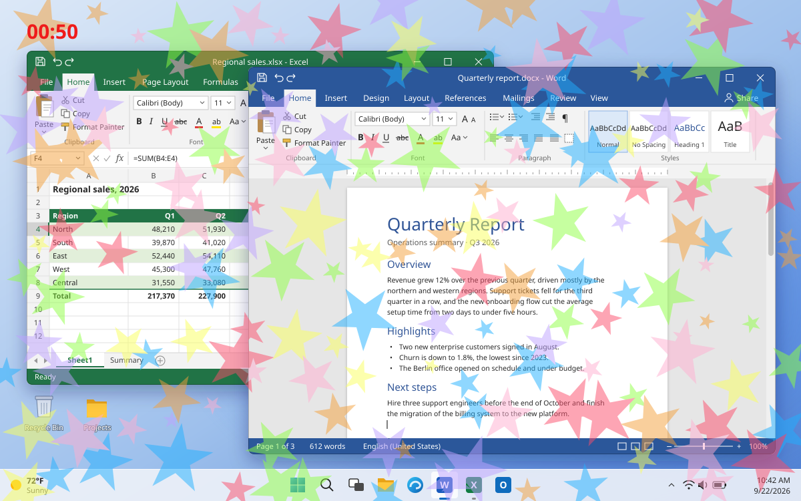

Free · for Windows
Take the break
your eyes deserve.
Enso Retreat is a small app that periodically blocks your screen and gives you a moment to look away, stretch and rest your eyes — then quietly gets out of your way again.
Free and open source. Runs quietly until it's time for a break.

How a break works
Locked, but never hidden.
When a break starts, Enso Retreat blocks the keyboard and mouse, so there is nothing left to click or type. A translucent overlay covers the desktop, and everything behind it stays in plain sight.
A heads-up first
An alert appears shortly before the break, and you can delay it if you're in the middle of something.
Hands off
Keystrokes and clicks don't reach your apps until the break is over. Nothing to do but look away and rest.
Still in the loop
Watch a download finish or a build run through the overlay. The numpad + and − keys make it more or less see-through.
Why it helps
Small nudges, on your terms.
A handful of settings, none of them mandatory.
Rest your eyes
Let yourself rest, look afar and run through a quick eye-gymnastics routine on every break.
Set your own rhythm
Configure the timing however you wish — a classic Pomodoro schedule, or anything else, down to a custom Crontab pattern.
Stays out of your way
Breaks can be skipped automatically while a chosen app is running, or when there's been no activity to interrupt.
Make it yours
Any picture can be shown as a gentle, transparent overlay while the screen is locked — your favourite wallpapers included.
Nowhere can man find a quieter or more untroubled retreat than in his own soul.
Quotes
A thought to rest on.
Turn on quotes, and every break brings a short line of wisdom on a dark card in the middle of the screen. Fifty come built in, from Marcus Aurelius and Seneca to Lao Tzu, and you can replace them with your own.
Your own words
One quote per line, the author after a dash. Shown at random or in order, never the same one twice in a row.
A picture above
Rodin's Thinker, any image of your own, or no picture at all, just the quote.
Set in your type
Any installed TrueType font, in italic or upright, in the colour and size you like.
Stars or plain dark
Keep your break screen around the card, or swap it for a calm, dimmed backdrop.
See it in action
A minute of your day, back.
Enso Retreat is already embedded into Enso Launcher as an optional module, but here you can download it as a standalone app.
Ready to take a breather?
Download Enso Retreat, set a schedule that suits you, and let it remind you when it's time to look away.